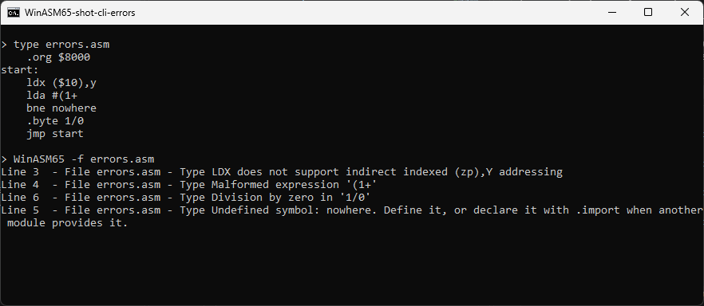

Syntax reference
The complete reference of the language WinASM65 accepts: standard MOS 6502 syntax, plus the common forms of ca65, asm6 and NESASM. The examples assume that the names they use are defined, without declaring them.
Line structure
A line holds at most one instruction or directive, optionally preceded by a label and followed by a comment. Indentation has no meaning: the line is trimmed before it is read. Mnemonics, directives and names are case-insensitive.
Start: ; a label alone on its line (colon required)
loop lda $2002,x ; a label before an instruction (colon optional)
Table: .byte 1, 2, 3 ; a label before a directive
bne loopA line is one of the following forms, tried in this order:
| Form | Example |
|---|---|
| Local scope | { … } |
| Anonymous label | -, ++ lda #0 |
| Origin | *= $C000 |
| Constant | N EQU 5, N .equ 5, N .set 5, N = 5 |
| Reservation | buffer .res 16 |
| Label + directive | Data: .word $1234 |
| Directive | .org $8000 |
| Label alone | Reset: |
| Instruction (with an optional label) | loop: lda #1 |
| Macro call | vblank wait1, $2002 |
Any other line is a syntax error.
Comments and strings
A comment starts at the first ; that is not inside a string or a character. .byte "a;b" and cmp #';' therefore keep their semicolon. A lone apostrophe, as in ; wait for 2 VBlank's, opens nothing.
A block comment runs from /* to */, inside a line or over as many lines as it needs:
/* Sound engine: pulse 1 for the effects,
noise for the explosions. */
lda #%00001001 /* pulse 1 and noise */ ; on
sta APU_STATUS
/* .byte 1, 2, 3 a whole block left out ;
.byte 4, 5, 6 */
rtsA block comment stands for a space, so lda/*count*/#1 is lda #1, and code may follow its */ on the same line. A ; inside it ends nothing; /* inside a string or a character is data (.byte "/*"). Each file keeps its own comment: one left open is reported, at the line of its /*, as Unterminated comment, and never runs on into the file that included it. Block comments do not nest.
A string is written between double quotes and may contain commas, semicolons and escape sequences:
| Sequence | Byte |
|---|---|
\n \r \t \0 | $0A $0D $09 $00 |
\\ \" \' | the backslash, the double quote, the apostrophe |
\xNN | the hexadecimal byte NN |
Any other sequence, an unterminated string, or a character above $FF is an error. The file names of .include and .incbin are read verbatim, without escapes, so that a Windows path keeps its backslashes.
Numbers and characters
| Form | Example | Value |
|---|---|---|
| Hexadecimal | $FF | 255 |
| Binary | %1010 | 10 |
| Decimal | 123 | 123 |
| Character | 'A' or "A" | 65 |
| Escaped character | '\n', '\x41' | 10, 65 |
| Booleans | TRUE, FALSE | 1, 0 |
% is a binary prefix only where a value is expected: 7%10 is a modulo, and equals 7. The C forms 0x10 and 0b1010 are not accepted: they produce an error, not a wrong value.
Expressions
An expression combines numbers, characters, names and operators. In decreasing order of precedence:
| Precedence | Operators | Meaning |
|---|---|---|
| 11 (unary) | < > + - ~ ! | low byte, high byte, sign, complement, logical not |
| 10 | * / % | multiplication, division, modulo |
| 9 | + - | addition, subtraction |
| 8 | << >> | shifts |
| 7 | < > <= >= | comparisons |
| 6 | == = != <> | equality, inequality |
| 5 | & | bitwise and |
| 4 | ^ | exclusive or |
| 3 | | | bitwise or |
| 2 | &&, AND | logical and |
| 1 | ||, OR | logical or |
Parentheses group. AND, OR, TRUE and FALSE are keywords only as whole words, in upper or lower case: origin and and_mask are names. # in front of the operand marks immediate addressing.
An expression that cannot be evaluated is an error reported on its line, instead of silently becoming 0:
- an unknown character (
lda #$12#); - a malformed shape: two values side by side, an operator without an operand, unbalanced parentheses;
- a division by zero, including one that only appears once a forward reference has been resolved;
- a number that is too large.
Program counter
* in operand position is the address of the current line. Between two values, * stays a multiplication. *= expr sets the origin, like .org.
*= $C000
jmp * ; loop in place: 4C 00 C0
Here: .word *+2 ; the address that follows this word
lda #2*3 ; 6, a multiplicationAn expression that is put on hold (because it reads a name defined further down) keeps the address of the line where it is written.
Labels
Global labels
A name starts with a letter or _, followed by letters, digits or _. Alone on its line it takes a colon; before an instruction or a directive the colon is optional. A global label that takes an address opens a new scope for local labels.
Local labels: @name
A name that starts with @ belongs to the last global label. The same name can therefore be used again in the next routine:
Clear:
ldx #0
@loop: sta $0200,x
inx
bne @loop
rts
Copy:
@loop: lda $0300,x ; another @loop
dex
bne @loopA constant or a reservation (.res) does not open a scope. Inside a macro or a .rep block, a local label belongs to the expansion: each call has its own. Referencing a local label of another scope, or defining one before any global label, is an error.
Anonymous labels: - and +
As in asm6, a line that starts with - or + defines an anonymous label. It can stand alone or be followed by an instruction. An operand that is only - designates the nearest - label backwards; an operand that is only +, the nearest + label forwards.
ldx #8
- dex
bne - ; back to the "-" line
beq +
nop
+ rts ; target of "beq +"Runs of different lengths are distinct labels: bne -- targets the nearest -- line, not the second -. An anonymous label that cannot be found is reported ("No anonymous label '+' after this line").
Local and anonymous labels are never exported (.symb files, module export tables): two units of the same project do not resolve their + against each other. A module does keep its local labels in its own table of local labels, so that its own references to them can be relocated; anonymous labels are left out of it.
Lexical scopes
{ and } open and close a scope: the names defined inside do not leave it.
Constants
| Form | Redefinable | Use |
|---|---|---|
N = expr | yes | working value, counter in a .rep |
N .set expr | yes | the same, ca65 style |
N EQU expr, N .equ expr | no | constant: a second definition with another value is an error (the same value is accepted) |
The .equ and .set directives are only used after a name; on their own they are an error.
A constant may read a name defined further down: it is then computed as soon as that name is known.
Directives
A directive starts with a dot. An unknown directive is an error (it used to be ignored silently).
Placement
| Directive | Effect |
|---|---|
.org expr, *= expr | Sets the assembly address. |
.pad address[, byte] | Fills up to the address (with 0 by default). An address already passed is an error. |
.align n[, byte] | Fills up to the next multiple of n, which must be a power of two. |
.memarea expr | Sets the start of the reservation area used by .res. |
name .res n | Gives the name the current address of the reservation area, then advances it by n. Emits nothing. |
.res n | Advances the reservation area without naming the space. |
Data
| Directive | Effect |
|---|---|
.byte (aliases .db, .byt) | One byte per value; a string gives its bytes. Values from -128 to 255. |
.word (aliases .dw, .addr) | One 16-bit word per value, low byte first. |
.asciiz | Like .byte, followed by a zero byte. |
.lobytes e, … / .hibytes e, … | The low (or high) byte of each value: an address table split into two tables. |
.dsb n[, byte] (aliases .ds, .fill) | n bytes of the given value (0 by default). Emits, unlike .res. |
.dsw n[, word] | n words of the given value. |
.incbin "file"[, start[, length]] | The bytes of a file, from a given offset and for a given length; the whole file by default. A range outside the file is an error. |
.include "file" | Assembles another source at this point (path relative to the current file). |
Arguments are separated by the commas that are not inside a string, a character or parentheses. A value that does not fit its field is an error, not a truncation. The byte count of .dsb, .pad and .align must be known on the line itself.
Conditional assembly
.if PAL
lda #50
.elseif DENDY
lda #50
.else
lda #60
.endif.if expr, .ifdef name, .ifndef name, .elseif expr, .else, .endif, up to 255 nesting levels. The condition of an .elseif is only read if no earlier branch was taken; an .else or an .elseif after an .else is an error.
Diagnostics
| Directive | Effect |
|---|---|
.error "message" | Error on this line: the build fails. |
.warning "message" | Warning: the build goes on. |
.assert expr[, "message"] | Error if the expression is false. If it reads a name defined further down, it is checked once the unit is complete. |
In a conditional branch that is not assembled, these directives do nothing.
Modules and end
.export a, b and .import sym[, module] declare the names exchanged between relocatable modules (see Modules, linker, viewer). .export takes several names, but must come after their definitions; .import takes one symbol per line, and a second name on the line is the module expected to provide it. .end stops assembling the file.
Macros and repetitions
.macro vblank label, register
label: bit register
bpl label
.endmacro ; or .endm
vblank wait1, $2002.macro name p1, p2….endmacro(alias.endm) defines a macro; it is called by its name followed by the arguments.- Parameters are replaced as whole words: a parameter named
xdoes not rewritetax. - Arguments are separated like those of a directive. If there are more arguments than parameters, the last parameter receives all the rest:
get ($10),ypasses the whole operand to a one-parameter macro. .rep n….endrep(aliases.rept,.endr) repeats a blockntimes.- Macros and repetitions do not nest. Each expansion has its own local labels.
Addressing modes
| Mode | Syntax | Example | Bytes |
|---|---|---|---|
| Implied | clc | 1 | |
| Accumulator | A or nothing | asl a, asl | 1 |
| Immediate | #value | lda #$10 | 2 |
| Zero page | $nn | lda $10 | 2 |
| Zero page,X / ,Y | $nn,x $nn,y | ldx $10,y | 2 |
| Absolute | $nnnn | jmp $C000 | 3 |
| Absolute,X / ,Y | $nnnn,x $nnnn,y | sta $0200,x | 3 |
| Indirect | ($nnnn) | jmp ($FFFC) | 3 |
| Indexed indirect X | ($nn,x) | lda ($10,x) | 2 |
| Indirect indexed Y | ($nn),y | lda ($10),y | 2 |
| Relative | target | bne loop | 2 |
| Zero page indirect (65C02) | ($nn) | lda ($10) | 2 |
| Absolute indexed indirect (65C02) | ($nnnn,x) | jmp ($1234,x) | 3 |
| Zero page + relative (R65C02) | $nn,target | bbr0 $10,loop | 3 |
- Choosing zero page. A known value between 0 and 255 takes the zero-page form when the instruction has one. A forward reference takes the absolute form, unless the instruction only exists in zero page (
stx name,y,sax,rmb…). Aas an operand.Ais the accumulator only for an instruction that has that form (ASL, LSR, ROL, ROR; INC and DEC on the 65C02). Anywhere else it is a name:lda Areads the symbolA.- Forms that do not exist. An instruction written in a mode it does not have is an error ("STX does not support absolute,X addressing"). Previously the byte
$FFwas emitted without any message. - Relative branches. A displacement outside -128…127 is an error, reported on the branch's line even when the target is defined further down.
Processors
The processor is chosen with -cpu on the command line or with Target.Cpu in config.json. See also CPUs and emulation core.
| Name | Aliases | Instruction set |
|---|---|---|
6502 | nmos, nmos6502 | The 56 documented instructions of the NMOS 6502 (151 opcodes). |
6502x | nmos6502x, 6502illegal | The 6502 plus its stable undocumented opcodes. |
65c02 | cmos | The 65C02: BRA, PHX, PHY, PLX, PLY, STZ, TRB, TSB, (zp), jmp (abs,x), extended BIT, INC/DEC A. |
r65c02 | rockwell | The 65C02 plus RMB0-7, SMB0-7, BBR0-7, BBS0-7. |
w65c02 | w65c02s, wdc65c02 | The R65C02 plus STP and WAI (the 65C02 made today, the one in the Commander X16). |
Undocumented opcodes (6502x)
| Mnemonic | imm | zp | zp,x | zp,y | abs | abs,x | abs,y | (zp,x) | (zp),y | impl. |
|---|---|---|---|---|---|---|---|---|---|---|
| SLO | 07 | 17 | 0F | 1F | 1B | 03 | 13 | |||
| RLA | 27 | 37 | 2F | 3F | 3B | 23 | 33 | |||
| SRE | 47 | 57 | 4F | 5F | 5B | 43 | 53 | |||
| RRA | 67 | 77 | 6F | 7F | 7B | 63 | 73 | |||
| SAX | 87 | 97 | 8F | 83 | ||||||
| LAX | A7 | B7 | AF | BF | A3 | B3 | ||||
| DCP | C7 | D7 | CF | DF | DB | C3 | D3 | |||
| ISC | E7 | F7 | EF | FF | FB | E3 | F3 | |||
| ANC | 0B | |||||||||
| ALR | 4B | |||||||||
| ARR | 6B | |||||||||
| AXS | CB | |||||||||
| LAS | BB | |||||||||
| NOP | 80 | 04 | 14 | 0C | 1C | EA | ||||
| JAM | 02 |
Left out:
- The unstable opcodes, whose result depends on the chip: ANE/XAA
$8B, LXA$AB, SHA, SHX, SHY, TAS. - The duplicate encodings of an instruction that already has one: SBC
$EB, ANC$2B, the other NOP and JAM codes. The disassembler shows them as.byte.
Rockwell and WDC bit instructions
| Mnemonic (n = 0 to 7) | Syntax | Opcode | Effect |
|---|---|---|---|
| RMBn | rmb3 $10 | $07 + n×$10 | Clears bit n of the zero-page byte. |
| SMBn | smb3 $10 | $87 + n×$10 | Sets bit n. |
| BBRn | bbr0 $10,target | $0F + n×$10 | Branches if bit n is 0. The displacement counts from the end of the instruction (3 bytes). |
| BBSn | bbs7 $10,target | $8F + n×$10 | Branches if bit n is 1. |
| WAI (W65C02) | wai | $CB | Waits for an interrupt. |
| STP (W65C02) | stp | $DB | Stops the clock until reset. |
The monitor's execution core only implements the 151 documented NMOS opcodes. The instructions above assemble and disassemble, but do not execute in that core.
Error messages
Each message is reported on the line that caused it, in the form Line N - File f - Type message (or file:line: error: message with WinASM65.Tooling --build).



| Message | Cause |
|---|---|
| Unknown instruction or macro 'foo' | A word in mnemonic position that is neither an instruction of the CPU nor a macro. |
| X does not support … addressing | The instruction does not exist in that mode. |
| Unknown directive '.xxx' | Unknown directive. |
| Invalid token '…' in expression '…' | Unrecognized character in an expression. |
| Malformed expression '…' | Two values side by side, an operator without an operand, unbalanced parentheses. |
| Division by zero in '…' | Division or modulo by zero. |
| Number '…' is too large | A number beyond 64 bits. |
| Unterminated string literal / Invalid escape sequence | Unclosed string, unknown escape. |
| Unterminated comment: this /* is never closed by */ | A block comment left open at the end of its file; reported at the line of its /*. |
| Value N is out of range for a 1-byte (2-byte) operand | Value too large for its field. |
| Relative jump is too big | Branch further than 127 bytes. |
| Undefined symbol: name. Define it, or declare it with .import when another module provides it. | A name never defined (nor imported). |
| Constant 'n' already defined with a different value | A second EQU definition with another value. |
| Local label '@x' is not defined in the scope of 'G' | Local label referenced outside its scope. |
| Local label '@x' has no global label before it | Local label with no global label before it. |
| No anonymous label '-' before (after) this line | Anonymous label not found. |
| .pad target is below the current address | .pad to an address already passed. |
| .align requires a positive power of two | Invalid boundary. |
| .incbin offset/length outside 'f' | Range outside the file. |
| .else/.elseif after .else | A branch after the .else. |
| Assertion failed: … | False .assert. |
| Exported symbol 'x' is not defined in this unit. | .export of a name not defined at that point (the definition must come first). |
| X expects … | Wrong number or kind of arguments, or a value that must be known on the line itself. |
What is not supported
- Directives without a dot (
org,dbin the asm6 style): they would collide with labels and macros. OnlyEQUis written without a dot. .dc.b/.dc.w(68000 style): use.byte/.word.- ca65's
.proc,.scope,.segment: scopes are{ }and local labels; segments are described inconfig.json(see Projects and segments). - Local labels written
.name: the dot introduces directives, hence the choice of@name. - Several instructions per line, and
*comments in column 1. - Functions in expressions (
.defined(),.sizeof()…). - Nested macros and
.rep.